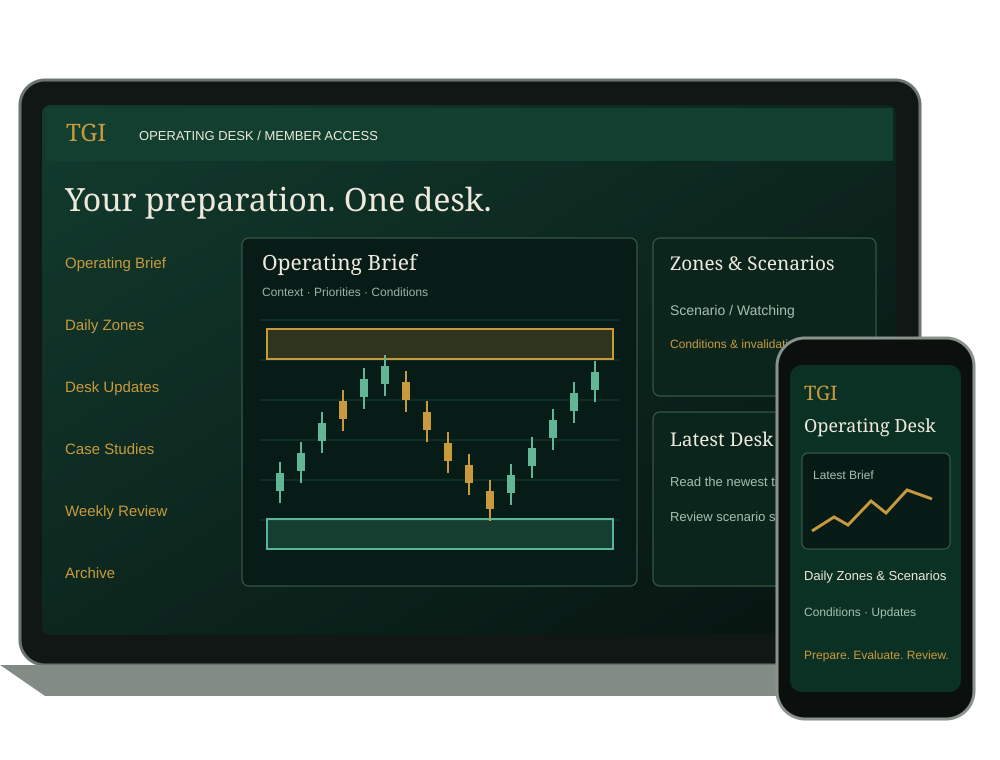

Operating briefs
Understand the market environment, watchlist priorities, and conditions Jay is monitoring before considering risk.
TGI Operating Desk · Member access
Inside Jay Bryan’s market preparation: annotated charts, exact Daily Zones, conditional scenarios, and commentary as conditions develop.
Recurring monthly membership. Cancel anytime.
Secure enrollment and member access through Thinkific.

The preparation behind the decision
A market opinion is easy to publish. A useful preparation process shows its evidence, conditions, and limitations. The Desk brings that work together so you can develop your own judgment.
Understand the market environment, watchlist priorities, and conditions Jay is monitoring before considering risk.
See mapped supply and demand, precise zone boundaries, and the structure behind the analysis.
Follow what would support a scenario, what would invalidate it, and what would justify staying on the sidelines.
Track changes in market structure and scenario status. Read the latest timestamp before relying on an earlier brief.
Examine selected completed decisions, management choices, and process lessons—including where execution can improve.
Revisit preparation and completed work. Use the archive to study context, rather than treating older charts as current instructions.
Your three-stage routine
Start with the most recent brief. Open the relevant scenario. Return to the latest update when conditions change.
Already a member? Sign in →Establish macro context, market structure, and the day’s priorities.
Study Daily Zones, scenario logic, and invalidation before making your own decision.
Review newer commentary, scenario status, and completed case studies. An older chart is not current authorization.

From Jay Bryan · Founder & author
“I share the preparation behind my decisions: the charts I’m studying, the zones I’m watching, and the conditions that could change my view. The goal is to help you think through the market—not borrow my conviction.”
Jay brings his software engineering background to a structured approach to market preparation, documentation, and risk. He is the author of The Daily Zone Command™.
Fit before enrollment
Your daily preparation. One member desk.
Bring more structure to your preparation with current commentary, mapped Daily Zones, conditional scenarios, and selected trade reviews.
Before you join
No. Daily Zones and scenarios are educational observations, not instructions to buy or sell. You remain responsible for your own analysis, position sizing, risk, and decisions.
Complete enrollment through Thinkific, then access the member portal. Begin with Start Here, open the latest Operating Brief, and review the relevant scenario records and newest Desk Updates.
The Desk contains ongoing market preparation and commentary as conditions develop. Check each entry’s timestamp and latest status. Membership does not promise continuous monitoring, instant alerts, or a new trade every day.
Yes. Manage your subscription in your Thinkific account’s billing settings. Cancel before your next renewal to stop future monthly charges. Access continues through the paid billing period. Cancellation does not itself refund a payment; review the refund and access terms shown at checkout.
This offer is for the TGI Operating Desk. The Daily Zone Command book, any standalone course, CDZA certification, and one-to-one mentorship are separate and are not included in this membership.
You can access the Thinkific-hosted member portal on desktop and mobile. This offer does not depend on the release of a branded TGI mobile app.
The TGI Operating Desk provides general educational market commentary. It is not personalized investment, financial, or trading advice, a recommendation to transact, or a signal or copy-trading service. Scenarios may change or become invalid. Commentary may not be updated in real time.
Trading involves substantial risk, including loss of capital. Leverage can amplify losses. No profitability, performance, funding, or income outcome is guaranteed. Past performance and illustrative, hypothetical, or simulated examples do not establish future results. Sample visuals on this page are demonstrations, not current levels or proof of returns.
Membership is for individual use by adults 18 and older; accounts and member content may not be shared or redistributed. The book, standalone courses, certification, and personalized mentoring are not included.
Review the Terms, Privacy Policy, Risk Disclosure, and checkout terms before enrollment. Questions? jay@tradergrowth.com.